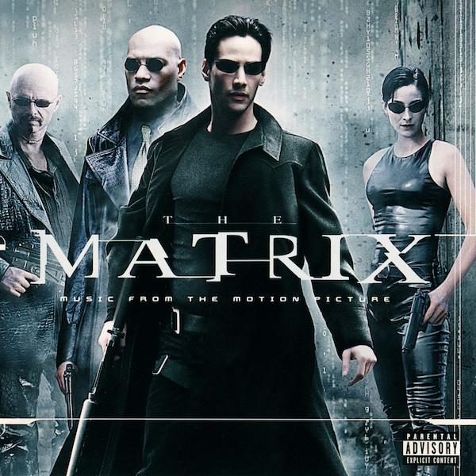

Lucas Egard Grosfeld
Junior Web Developper @LeWagon
After 3 years of working in lifestyle management, I studied Web Development at LeWagon and now I'm a succesfull junior developper. My mission now is to restore all ugly websites and make the digital world prettier and nicer to look at. I love watching movies in my free-time.
My TOP 3 Favorite movies
|  |
1999 - The MatrixNeo (Keanu Reeves) believes that Morpheus (Laurence Fishburne), an elusive figure considered to be the most dangerous man alive, can answer his question -- What is the Matrix? Neo is contacted by Trinity (Carrie-Anne Moss), a beautiful stranger who leads him into an underworld where he meets Morpheus. They fight a brutal battle for their lives against a cadre of viciously intelligent secret agents. It is a truth that could cost Neo something more precious than his life. |

|
2013 - The Wolf of WallstreetIn 1987, Jordan Belfort (Leonardo DiCaprio) takes an entry-level job at a Wall Street brokerage firm. By the early 1990s, while still in his 20s, Belfort founds his own firm, Stratton Oakmont. Together with his trusted lieutenant (Jonah Hill) and a merry band of brokers, Belfort makes a huge fortune by defrauding wealthy investors out of millions. However, while Belfort and his cronies partake in a hedonistic brew of sex, drugs and thrills, the SEC and the FBI close in on his empire of excess. |

|
1975 - One Flew Over the Cuckoo's NestWhen Randle Patrick McMurphy (Jack Nicholson) gets transferred for evaluation from a prison farm to a mental institution, he assumes it will be a less restrictive environment. But the martinet Nurse Ratched (Louise Fletcher) runs the psychiatric ward with an iron fist, keeping her patients cowed through abuse, medication and sessions of electroconvulsive therapy. The battle of wills between the rebellious McMurphy and the inflexible Ratched soon affects all the ward's patients. |
About this page
This page has been coded during the FullStack program @LeWagon. That was probably the best experience of my entire life.